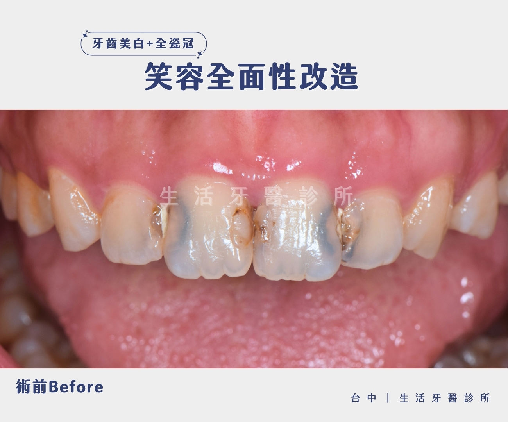
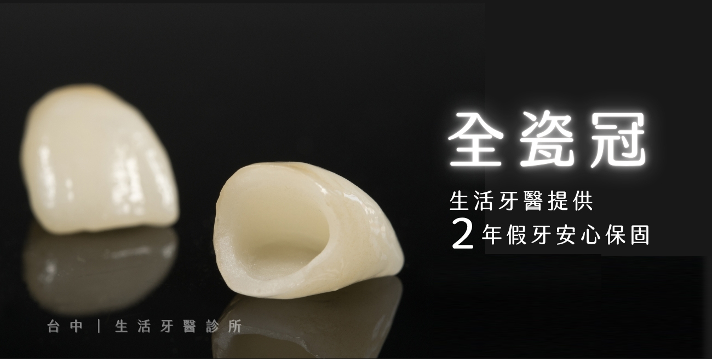
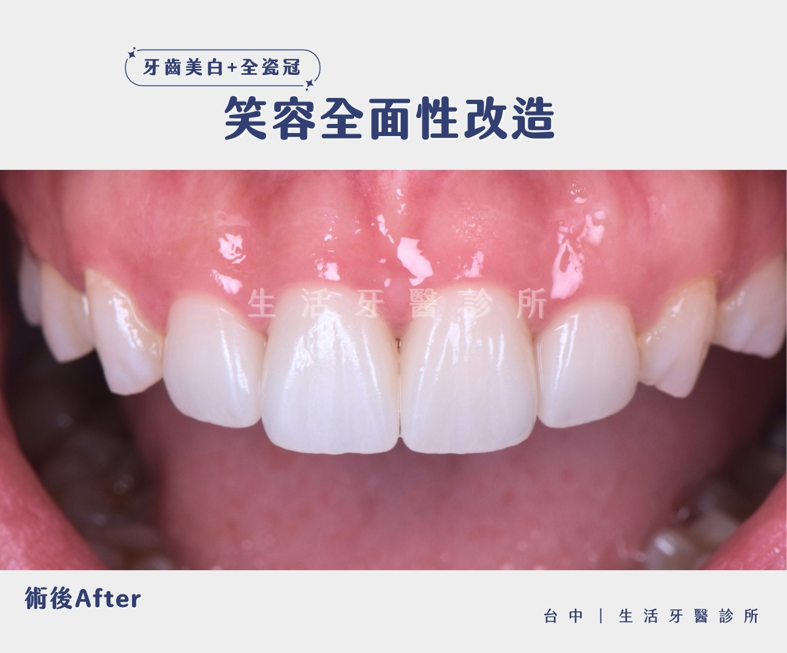

笑容是最好的名片，但當門牙出現齲齒、變黑時，往往讓人不敢自信開口。本次案例中的患者，因前牙嚴重蛀牙導致齒質變色，不僅影響美觀，更擔心牙齒的健康狀況。在台中生活牙醫的美學牙醫陳嘉豪醫師專業規劃下，透過整合性的數位美學牙科治療，成功讓牙齒重現宛如天生的亮白與自然感。

術前狀況分析：門牙蛀牙導致的齒質染色
從術前照片可以觀察到，患者的前牙區有明顯的齲齒變黑現象，且牙齒表面色澤不均。若僅是進行簡單的補牙，難以掩蓋深層的染色問題，且長期下來補綴物容易崩落或產生邊緣滲漏。 陳嘉豪醫師指出，針對這類門牙美觀修復的案例，最重要的第一步是「齒色對齊」。如果直接製作假牙，容易與鄰近牙齒產生色差，顯得突兀不自然。

專屬診療方案：居家美白 + 高透感全瓷冠
為了達到完美的笑容全面性改造，陳醫師為患者量身打造了兩階段治療計畫：
⭐第一階段：居家美白，建立潔淨底色
在製作假牙前，我們先安排了居家美白療程。透過客製化美白藥劑與牙托，溫和地提升全口牙齒的亮度，將齒色調整到理想的潔淨程度。這一步是數位美齒優化的關鍵，確保後續假牙製作時，能以亮白後的齒色作為標準，避免術後出現「一顆白、整排黃」的尷尬情況。
⭐第二階段：客製化全瓷冠，兼具健康與美學
底色調整完成後，陳醫師利用高透感全瓷冠材料取代受損的齒質。全瓷牙冠不含金屬成分，擁有極佳的生物相容性，且光澤與透明度能模擬真實牙釉質，讓修復後的門牙與鄰牙完美融合，完全看不出假牙的痕跡。

術後成果：煥然一新的自信美齒
經過陳嘉豪醫師的精雕細琢，患者的牙齒不僅恢復了健康的咀嚼功能，外觀上更是徹底轉變：
📍色澤一致性： 透過牙齒美白與全瓷冠的搭配，達成全口協調的透亮白。
📍齒型微調： 修正了原先因破損產生的不規則邊緣，重塑微笑曲線。
📍健康維護： 密合度極佳的假牙設計，大幅降低未來再次蛀牙的風險。

尋找台中全瓷冠推薦？生活牙醫為您量身打造
如果您也面臨門牙蛀牙變黑、舊假牙邊緣發黑或是想進行笑容大改造，歡迎預約生活牙醫診所陳嘉豪醫師。我們致力於將牙科醫療與美學藝術結合，為每一位患者找回最迷人的自信笑容。